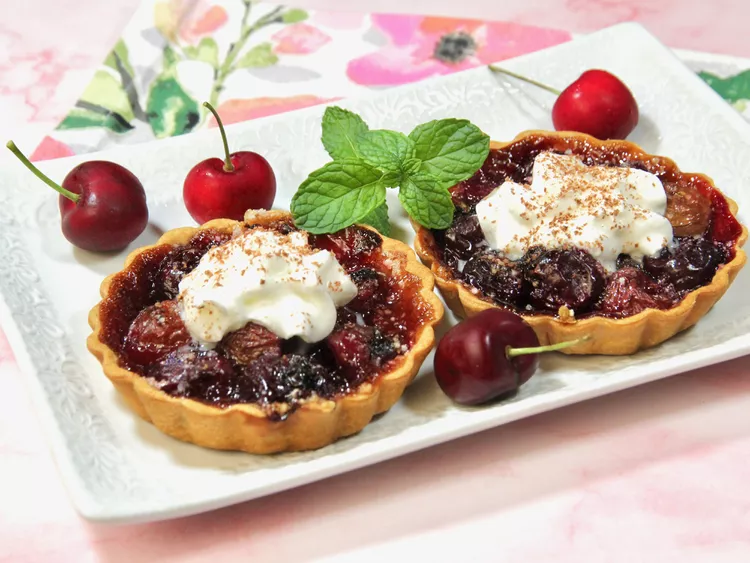

These Homemade Cherry Tarts Are Sure to Sweeten Your Day

Description
With so many ways to enjoy fresh cherries, these cherry tarts are one of my favorites. They can be served warm or chilled, and we like them with a dollop of whipped cream and a sprinkling of chocolate shavings.
Ingredients
- 1 (14.1 ounce) package refrigerated pie crusts
- 1 pound fresh sweet cherries, pitted
- 2 tablespoons minute tapioca
- 1/3 cup sugar
- 1/2 teaspoon almond extract
- 1 pinch salt
- 1/2 cup whipped cream, or as needed (optional)
- grated chocolate as needed for garnish (optional)
Steps
- Place pie crusts on a lightly floured surface and roll out each crust with a rolling pin, so it is large enough to cut three 5 to 5-1/2-inch circles, for a total of 6 tart crusts.
- Fit each dough circle into a 4-inch removable-bottom tart pan. Press the dough against the sides of the pans, and prick the bottom with a fork to prevent bubbling. Remove any excess dough by running the rolling pin across the top of each pan.
- Refrigerate tart crusts until well chilled, about 45 minutes, keeping them refrigerated until ready to use.
-
Preheat the oven to 400 degrees F (200 degrees C).
-
In a large bowl, combine cherries, tapioca, sugar, almond extract, and salt. Remove the pans from the fridge and distribute cherry mixture evenly among the tart pans. Place the pans on a baking sheet.
- Bake in the preheated oven until cherries are soft and crust is golden brown, 25 to 30 minutes.